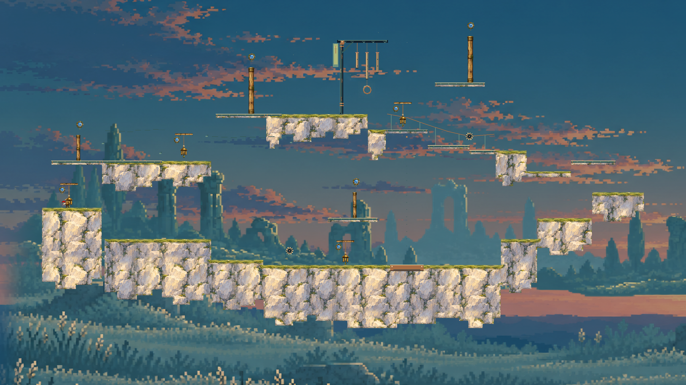

7个开放地形Module构成上下路线与回环，没有默认四面外墙。主线约11秒实际行进中三次空中击铃；每一枪同时改变位移和门的状态。
下载主线短视频 · 正常1倍速度，包含完整连续动作。
通过齿轮，击铃反冲取得奖励，同时启动升降平台，再经上层回到熟悉的西岸。下载奖励回程短视频

新增联动风铃：原风铃开门的同一次命中还会启动原升降平台。全图有4处功能风铃、2处移动齿轮与1处受铃控制的平台；风铃动作来自两类核心，不将摆放次数当玩法种类。
5条整图路线通过，覆盖16个允许方向；20个新机关相位案例通过，7个省略射击/延长普通跳跃反例失败。两段原片共2229帧逐字段一致。7份Module再次从候选库读取后真实主线通过，生成调用0。
这是确定性空间语法样品，非多Seed品质或真人手感验收。地形仍使用矩形碰撞并集，开放区域还可能存在其他跳落路线。旧低机关密度版本和首批失败留出原件均保留，未更名充当新成功。